전기기능사 (2004-07-18 기출문제)
1과목: 전기 이론
1. 3000[AT/m]의 자장 중에 어떤 자극을 놓았을 때 300[N]의 힘을 받는다고 한다. 자극의 세기는 몇[Wb]인가?
- 0.1
- 0.5
- 1
- 5
(정답률: 58%)

2. 자장의 세기에 대한 설명이 잘못된 것은?
- 단위 자극에 작용하는 힘과 같다.
- 자속 밀도에 투자율을 곱한 것과 같다.
- 수직 단면의 자력선 밀도와 같다.
- 단위길이당 기자력과 같다.
(정답률: 57%)
3. 단면적 A[m2],자로의 길이 ℓ [m],투자율 μ,권수 N회인 환상 철심의 자체 인덕턴스의 식은 다음 중 어느 것인가?
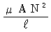
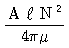
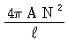
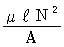
(정답률: 46%)
4. 전류에 의한 자기장의 방향을 결정하는 것은?
- 앙페르의 오른나사의 법칙
- 플레밍의 오른손 법칙
- 플레밍의 왼손 법칙
- 렌즈의 법칙
(정답률: 75%)
5. 100[V]의 전압계가 있다. 이 전압계를 써서 200[V]의 전압을 측정하려면 최소 몇[Ω]의 저항을 외부에 접속해야 하겠는가? (단, 전압계의 내부저항은 5000[Ω]이라 한다.)
- 10000
- 5000
- 2500
- 1000
(정답률: 54%)
6. RL의 병렬회로시 합성 임피던스는?
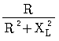
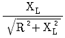
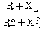
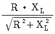
(정답률: 50%)
7. 그림의 벡터는 다음 어느 회로를 나타내는가?
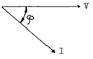
- R
- L
- R - C 직렬회로
- R - L 직렬회로
(정답률: 47%)
8. 2전력계법으로 3상전력을 측정할 때 지시 P1= 200[W], P2= 200[W]일대 부하전력[W]은?
- 200
- 400
- 600
- 800
(정답률: 81%)
9. 전기장중에 단위전하를 놓았을 때 그것에 작용하는 힘은 어느 값과 같은가?
- 전장의 세기
- 전하
- 전위
- 전위차
(정답률: 72%)
10. 그림과 같은 회로에 저항이 R1 > R2 > R3 > R4일 때 전류가 최소로 흐르는 저항은?
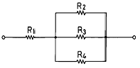
- R1
- R2
- R3
- R4
(정답률: 68%)
11. 황산구리 용액에 5[A]의 전류로 30[g]의 구리를 석출시키려면 몇 시간 전기분해를 하여야 하는가? (단, 구리의 전기 화학 당량은 0.0003293[g/C]이다.)
- 2
- 3
- 4
- 5
(정답률: 41%)
12. 반지름 r[m], 권수 N회의 환상 솔레노이드에 I[A]의 전류가 흐를 때 그 내부의 자장의 세기 H[AT/m]는 얼마인가?
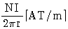
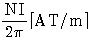
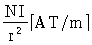
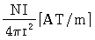
(정답률: 70%)
13. 히스테리시스손은 최대 자속 밀도의 ( (ㄱ) )승에 비례하고, 주파수에 ( (ㄴ) )한다. ( )안에 들어갈 적당한 말은?
- (ㄱ):1.6, (ㄴ):비례
- (ㄱ):1.2, (ㄴ):비례
- (ㄱ):1.2, (ㄴ):반비례
- (ㄱ):1.6, (ㄴ):반비례
(정답률: 46%)
14. i=8√2 sinω t+6√2 sin(2ω t+60) [A]의 실효값은?
- 2
- 5
- 10
- 20
(정답률: 63%)
15. 평행판 콘덴서의 전극의 면적을 A[㎡] 극판 사이의 거리를 I[m]이고, 극판 사이에 채워진 유전체의 유전율을 ε이라고 하면 콘덴서의 정전 용량 C[F]은?
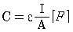
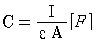
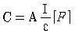
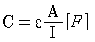
(정답률: 42%)
16. 유전체 내에서 크기가 같고 극성이 반대인 1쌍의 전하를 가지는 원자를 무엇이라 하는가?
- 분극자
- 전자
- 원자
- 쌍극자
(정답률: 70%)
17. 도체의 전기저항을 맞게 설명한 것은?
- 길이에 비례하고 단면적에 반비례한다.
- 길이에 비례하고 단면적에 비례한다.
- 길이에 반비례하고 단면적에 반비례한다.
- 길이에 반비례하고 단면적에 비례한다.
(정답률: 68%)
18. 볼타 전지로부터 전류를 얻게 되면 양극의 표면이 수소기체에 의해 둘러싸이게 되는데 이를 무엇이라 하는가?
- 전해 작용
- 화학 작용
- 전기 분해
- 분극 작용
(정답률: 58%)
19. 가요 전선관의 상호접속은 무엇을 사용하는가?
- 컴비네이션커플링
- 스플릿커플링
- 더블커넥터
- 앵글커넥터
(정답률: 61%)
20. 전동기의 정격 전류 합계가 50[A]를 넘을 경우 그 저압 옥내 간선에 사용할 수 있는 전선의 허용전류는 전동기 등의 합계 전류의 몇 배 값 이상인가?
- 1.25
- 1.3
- 1.1
- 2
(정답률: 65%)
2과목: 전기 기기
21. 과전류 차단기로 시설하는 퓨우즈 중 고압 전로에 사용하는 포장 퓨우즈는 정격전류의 1.3배에 견디고 또한 2배의 전류로 몇 분 이내에 용단되는 것이어야 하는가?
- 10분
- 30분
- 60분
- 120분
(정답률: 34%)
22. 기계기구의 철대 및 외함접지에서 옳지 못한 것은?
- 400V 이하인 저압용에서는 제3종 접지공사
- 400V를 넘는 저압용에서는 제2종 접지공사
- 고압용에서는 제1종 접지공사
- 특별고압용에서는 제1종 접지공사
(정답률: 63%)
23. 전동기의 과부하 보호에 사용되는 자동장치는?
- 온도 퓨즈
- 열동 계전기
- 선택접지 계전기
- 서머 스타트
(정답률: 58%)
24. 피뢰기의 접지공사의 종류는?
- 제1종
- 제2종
- 제3종
- 특별3종
(정답률: 56%)
25. 직접 매설식의 지중 선로에 가장 많이 사용되는 케이블은?
- 강대 개장 연피케이블
- 플렉시블 개장 케이블
- 클로로플렌 외장 케이블
- 비닐 외장 케이블
(정답률: 21%)
26. 4심 고무코오드 선심의 색은 흑, 녹, 백, 적이다. 접지선에 사용하는 선의 색은?
- 흑
- 녹
- 백
- 적
(정답률: 61%)
27. 전동기의 정격전류가 50[A]이다. 전선의 허용전류는 몇 [A]인가?
- 50
- 62.5
- 65.5
- 73
(정답률: 65%)
28. 평균 수용전력과 합성 최대수용 전력의 비를 백분율로 표시한 것은?
- 부하율
- 부등율
- 수용율
- 설비율
(정답률: 37%)
29. 전선의 굵기가 3.2[mm]인 구리선의 접속방법은 다음 어떤 방법을 하는 것이 가장 적합한가?
- 트위스트 접속법
- 브리타니아 접속법
- 복권 접속
- 권선접속
(정답률: 63%)
30. 콘크리트 건물의 노출공사용으로 금속관과 병용하여 사용하며 전자적 평형을 유지하기 위하여 1회로의 전선을 동일 몰드 내에 10가닥 이하로 넣는 공사방법은?
- 합성수지몰드
- 금속몰드
- 목재몰드
- 와이어몰드
(정답률: 54%)
31. 회로의 지락 사고의 파급을 방지하기 위하여 지락 사고가 생겼을 때 흐르는 영상 전류를 검출하여 접지 계전기에 의하여 차단기를 동작시켜 사고를 예방하는 기기는?
- ZCT(zero-phase current transformer)
- MOF(metering outfit)
- CT(current transformer)
- PT(potential transformer)
(정답률: 55%)
32. 부틸 고무 절연 클로로프렌 외장케이블로서 절연체는 내열성이 우수하며 안정된 성능을 구비하고 있어 광범위한 용도에 사용되는 케이블의 약칭은?
- CV 케이블
- EV 케이블
- RN 케이블
- BN 케이블
(정답률: 31%)
33. 캡타이어 케이블의 지지점 간의 거리는 얼마이하로 하는가?
- 2m
- 3m
- 1m
- 1.5m
(정답률: 50%)
34. 분기회로의 개폐기 및 과전류 차단기는 저압 옥내 간선과의 분기점에서 전선의 길이가 몇[m] 이하의 곳에 시설하여야 하는가?
- 3
- 4
- 5
- 8
(정답률: 53%)
35. 발전소에서 발전된 전력이나 변전소에서 변성된 전력을 지지물을 통해 수용가로 전송하기 위한 전선을 무엇이라 하는가?
- 지선
- 가공지선
- 가공전선
- 연접 인입선
(정답률: 47%)
36. IV 전선이란?
- 인입용 비닐절연전선
- 옥외용 비닐절연전선
- 형광등 전선
- 600[V] 비닐절연전선
(정답률: 47%)
37. 저압 가공 인입선이 횡단 보도교 위에 시설되는 경우에 인입선의 노면상의 높이는?
- 2[m]
- 3[m]
- 3.5[m]
- 5[m]
(정답률: 38%)
38. 접지 공사의 목적으로 부적합한 것은?
- 감전방지
- 뇌해방지
- 보호협조
- 절연강도 강화
(정답률: 43%)
39. 다음 중 연선과 단선에 공용으로 적용되는 접속 방법은?
- 전선 맛대기용 스리브에 의한 압착접속
- 가는 단선 (2.6mm이하)의 분기접속
- S형 스리브에 의한 직선접속
- 터미널 러그에 의한 접속
(정답률: 32%)
40. 다음 중 굵은 Al선을 박스 안에서 접속하는 방법으로 적합한 것은?
- 링 스리브에 의한 접속
- 비틀어 꽂는 형의 전선 접속기에 의한 방법
- C형 접속기에 의한 접속
- 맛대기용 스리브에 의한 압착접속
(정답률: 50%)
3과목: 전기 설비
41. 교류 고압 배전반에서 전압이 높고 위험하여 전압계를 직접 주 회로에 병렬 연결할 수 없을 때 쓰이는 기기는?
- 전류 제한기
- 계기용 변압기
- 계기용 변류기
- 전압계용 절환 개폐기
(정답률: 61%)
42. 다음 중 8각 박스의 한 면을 금속관과 접속할 때 소요되는 로크너트의 개수는?
- 1개
- 2개
- 3개
- 4개
(정답률: 44%)
43. 고낙차 소수량 수차의 입구밸브에는 어떤 것이 가장 적당 한가?
- 슬루스밸브
- 나비형밸브
- 로타리밸브
- 니들밸브
(정답률: 31%)
44. 재열기로 가열되는 것은?
- 공기
- 급수
- 석탄
- 증기
(정답률: 57%)
45. 가공 배전선로에서 고압선과 저압선의 혼촉으로 인한 위험을 방지하기 위하여 필요한 것은?
- 과전류계전기
- 접지공사
- 피뢰기 설치
- 가공지선 설치
(정답률: 41%)
46. 송전 기계기구의 뇌에 대한 보호에 있어서 절연강도의 순서를 올바르게 나열한 것은?
- 피뢰기, 변압기 코일, 변압기 붓싱, 송전선의 애자
- 피뢰기, 송전선의 애자, 변압기 붓싱, 변압기 코일
- 송전선의 애자, 피뢰기, 변압기 붓싱, 변압기 코일
- 변압기 붓싱, 피뢰기, 송전선의 애자, 변압기 코일
(정답률: 37%)
47. 3상3선식 송전선에서 전선 상호간의 선간거리가 D1, D2, D3일 때 기하학적 평균거리는 얼마인가?
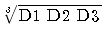
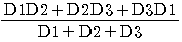
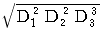
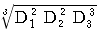
(정답률: 32%)
48. 어떤 발전소에서 30000kWh를 발전하는데 발열량 5500kcal/㎏의 석탄 15톤을 사용했다면 이 발전소의 열효율은 약 몇 % 인가?
- 31.3
- 42 .2
- 45.3
- 52.2
(정답률: 28%)
49. 기력발전소에서 석탄이 완전 연소할 때 연도가스의 주된 성분에 해당되지 않는 것은?
- 이산화탄소
- 질소
- 과열증기
- 일산화탄소
(정답률: 31%)
50. 밸런서가 필요한 배전방식은?
- 단상2선식
- 3상3선식
- 단상3선식
- 3상4선식
(정답률: 56%)
51. 화력발전소의 보일러 설비에 사용되는 절탄기는?
- 수압 조절
- 수관 정화
- 연료 절약
- 과열증기 응축
(정답률: 36%)
52. 우리나라의 공칭전압에 해당되는 것은?
- 330
- 6900
- 23000
- 154000
(정답률: 48%)
53. 3상용 차단기의 정격차단용량은?
- 정격전압×정격차단전류
- √3×정격전압×정격차단전류
- 3×정격전압×정격차단전류
- √3×정격전압×정격전류
(정답률: 54%)
54. V[m/s]인 등속층류의 물의 속도수두는?
- V / 2g
- v2 / 2g
- 2gV
- 2gV2
(정답률: 39%)
55. 취수구로 부터 끌어 들인 물을 수조 또는 조정지까지 이끌기 위한 시설물은?
- 가동댐
- 수로
- 여수토
- 침사지
(정답률: 66%)
56. H형 철탑으로 전차선 또는 도로나 하천 등을 횡단 하는 선로에 이용되는 것은?
- 사각철탑
- 직사각형 철탑
- 갠트리철탑
- 회전형 철탑
(정답률: 48%)
57. 3상3선식 송전선을 연가할 경우 일반적으로 전체 선로 길이를 몇 등분해서 연가 하는가?
- 2
- 3
- 4
- 5
(정답률: 64%)
58. 정전용량은 0.01㎌/km, 길이 173.2km, 선간전압 60000V, 주파수 60Hz인 송전선로의 충전전류는 몇 A 인가?
- 6.3
- 12.5
- 22.6
- 39.2
(정답률: 37%)
59. 직렬 축전기는?
- 정태 안정도를 감소시킨다.
- 선로의 유도리액턴스를 보상하여 전압강하를 줄인다.
- 선로의 인덕턴스를 증가시킨다.
- 역률 개선용으로 사용된다.
(정답률: 49%)
60. 중유연소장치에서 중유 버어너로부터 중유를 가스 상태로 분출시키는 방식이 아닌 것은?
- 증기 분사식 버어너
- 미분탄 분사식 버어너
- 압력 분사식 버어너
- 공기 분사식 버어너
(정답률: 46%)
B = F / (A x N)
여기서, B는 자극의 세기(Wb/m^2), F는 힘(N), A는 자성체의 면적(m^2), N은 자석의 개수이다.
문제에서 자극의 세기를 구하기 위해서는 자성체의 면적과 자석의 개수가 필요하지만, 문제에서는 이에 대한 정보가 주어지지 않았다. 따라서, 문제에서 구할 수 있는 것은 자극의 세기가 3000[AT/m]일 때 300[N]의 힘을 받는다는 것이다.
따라서, B = F / (A x N) = 300[N] / (1[m^2] x 3000[AT/m]) = 0.1[Wb/m^2]
따라서, 정답은 "0.1"이다.